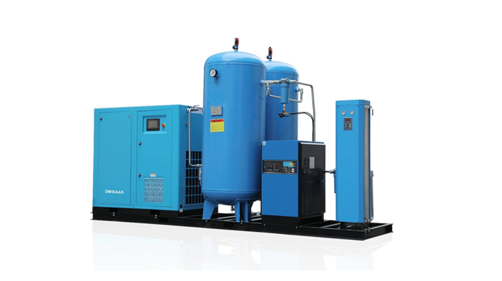

Zajedničko svim modelima
Kompletan sustav
- Vijčani kompresor, vijak proizvođača ROTORCOMP (Njemačka).
- Sušač zraka i 5 preciznih filtera u 6 stupnjeva.
- Ugrađena zaštita od udara i buke.
- Sustav stalne kontrole temperature.
- Visoka efikasnost, stabilnost i kvaliteta reza.
Kvaliteta zraka Izlaz
- Voda
- Bez vode
- Čestice
- < 0,01 µm
- Ulje
- < 0,001 ppm
- Rosište
- 2–10 °C